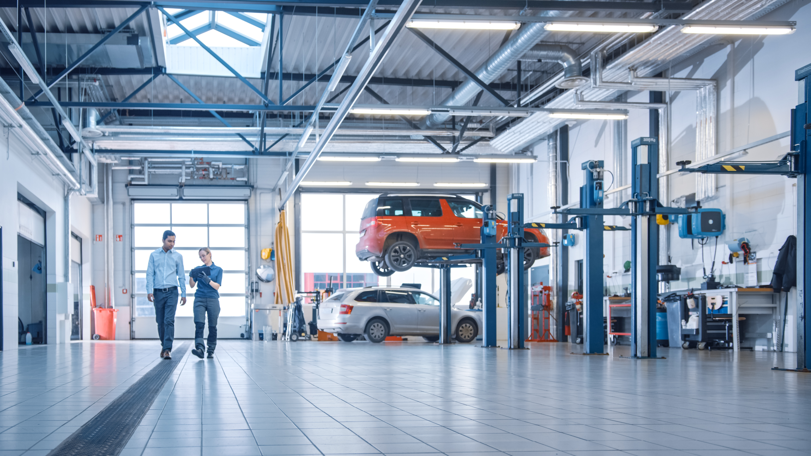
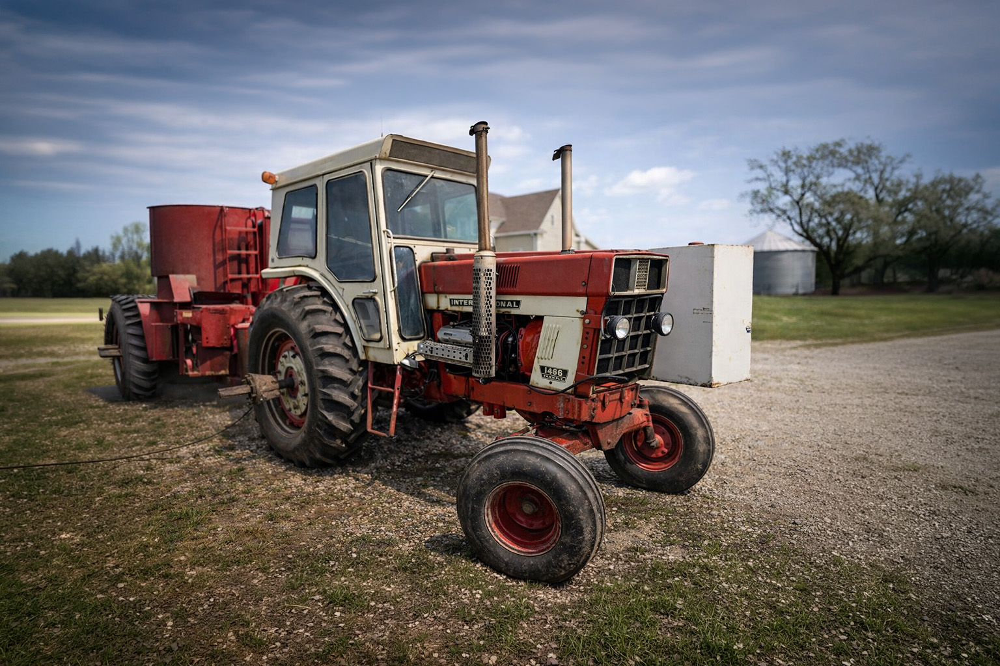
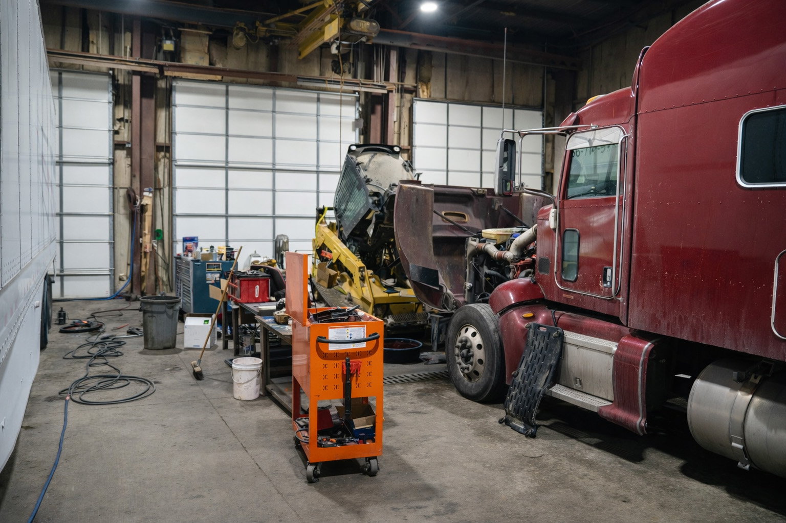

Real repair work for trucks people depend on every day.

Real Shop Work
See The Work.
Remember The Shop.
This page is built to show the real side of Integrity Diesel Truck & Auto Repair — diesel trucks, trailers, tractors, equipment, fabrication, and the kinds of jobs people around southeast Nebraska actually need done.
Where country kindness and prices meet big city expertise.
The kind of equipment work that separates this shop from basic mechanic shops.
Jobs that need more than just parts swapping and basic maintenance.
Real Photos
Built to show actual capability, not filler.
More Than One Type Of Work
Diesel, trailers, equipment, fabrication, and more.
Blue-Collar Trust
The kind of page people remember after they leave it.
Inside The Shop
What This Shop Actually Works On
Browse the kinds of trucks, trailers, machines, and fabrication work this shop is built around.
Diesel

Diesel Truck Repair
Real truck work for trucks people use to make a living, haul, tow, and get through the week.
Diesel
Trailer
Trailer Repair
Utility trailers, work trailers, and the kind of repairs that need to hold up after they leave the shop.
Trailer
Equipment

Tractor & Equipment
Shop work built around the machines farms, acreage owners, and working people actually depend on.
Equipment
Fabrication

Welding & Fabrication
When repair work turns into custom work, this is where the shop shows a little more range.
Fabrication
Heavy Equipment
Dozers, Loaders & More
From skid loaders to bigger machine jobs, this page helps show the range of work the shop handles.
Heavy Duty
Shop Work
More Than One Type Of Repair
Diesel, trailers, tractors, equipment, fabrication, and more — this page is here to prove that visually.
Full Shop

Blue-Collar Work People Remember
This page is the visual proof behind the rest of the website — real jobs, real equipment, and real capability.

Equipment Repairs That Fit The Brand
Tractors, loaders, dozers, trailers, fabrication, and the kinds of machines people actually need fixed.
Why This Page Matters
Built To Show Real Capability
For a diesel and equipment repair shop, photos do more than fill space. They build trust, show range, and help people understand this is a real working shop — not just another generic service website.
This page also helps reinforce what makes the business memorable: country kindness, fair prices, and the kind of repair experience people usually expect from much bigger shops.
What This Page Does
- Helps customers trust the shop faster
- Shows equipment types visually instead of only telling
- Makes the site feel more custom and memorable
- Creates stronger image SEO opportunities
Need Something Fixed?